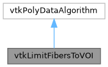

|
MUSICardio 4.2
MUSICardio application created by Inria Epione, IHU LIRYC and Université de Bordeaux
|
Loading...
Searching...
No Matches
|
MUSICardio 4.2
MUSICardio application created by Inria Epione, IHU LIRYC and Université de Bordeaux
|


Public Member Functions | |
| vtkTypeMacro (vtkLimitFibersToVOI, vtkPolyDataAlgorithm) | |
| void | PrintSelf (ostream &os, vtkIndent indent) |
| void | SetVOI (const double &, const double &, const double &, const double &, const double &, const double &) |
| void | SetBooleanOperation (int n) |
| void | SetBooleanOperationToAND () |
| void | SetBooleanOperationToNOT () |
| vtkGetMacro (BooleanOperation, int) | |
Static Public Member Functions | |
| static vtkLimitFibersToVOI * | New () |
Protected Member Functions | |
| virtual int | RequestData (vtkInformation *, vtkInformationVector **, vtkInformationVector *) |
|
inline |
Set the boolean operator: switch between concatenating the fibers (AND - 1) and removing the fibers (NOT - 0).
|
inline |
Set the boolean operator: switch between concatenating the fibers (AND - 0) and removing the fibers (NOT - 1).
|
inline |
Set the boolean operator: switch between concatenating the fibers (AND - 0) and removing the fibers (NOT - 1).
| void vtkLimitFibersToVOI::SetVOI | ( | const double & | , |
| const double & | , | ||
| const double & | , | ||
| const double & | , | ||
| const double & | , | ||
| const double & | |||
| ) |
Set the VOI